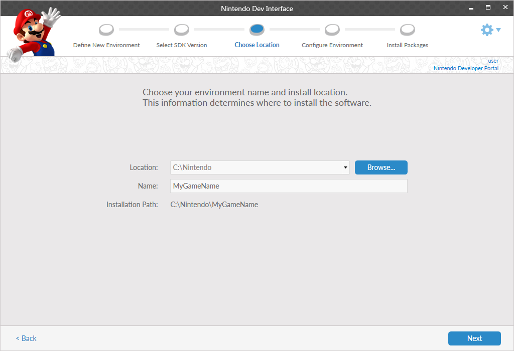

This screen sets the base installation directory for the environment being created. The fields are as follows.
-
Location: The directory location where the environment will be created.
-
Name: The name that the environment is referred to by NDI after installation. Environment names cannot contain spaces or special characters.
Info
- A suitable name for your environment may be one which describes the project being created. It should not have a name based on the version of the foundation installed. This is because when the environment is updated in the future, the version number of the SDK will change.
- Two environments with the same name cannot reside in the same location.
- The final installation path for the environment is a combination of the Location and Name fields. The Location is used as the base path, and the Name is used as an additional path underneath the Location. For example, an environment with the Name Environment and the Location C:\NDI_Environments, would have an installation path of C:\NDI_Environments\Environment.
If there is a conflict with the name of the environment entered, an error message displays the nature of the issue.